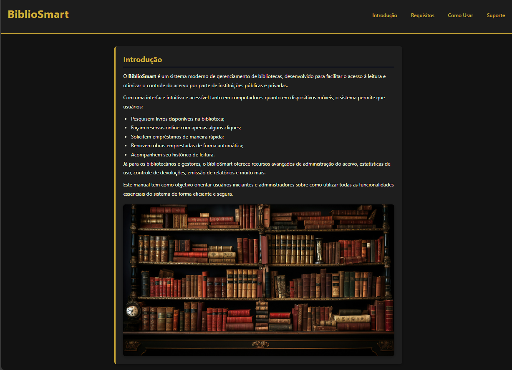

Bem-vindo ao Meu Portfólio
Projetos

Projeto 2

Uma página com receitas de refeição, sobremesa e lanche da tarde.
Link para o projeto GitHub
Projeto 5
É um sistema de gerenciamento de bibliotecas, desenvolvido para facilitar o acesso à leitura e otimizar o controle do acervo.
Link para o projeto GitHubSou um programador especializado em desenvolvimento web, apaixonado por criar soluções eficientes e inovadoras.